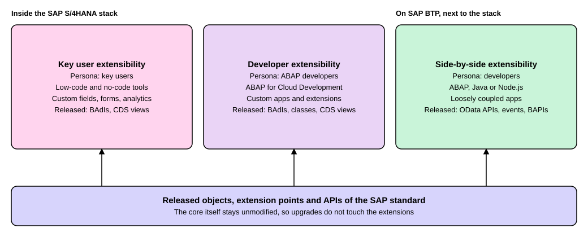

Extensibility and Clean Core
|
This content was generated with the assistance of AI and should be verified against the official documentation before being relied on in production. |
No company runs SAP software exactly as it comes out of the box. A retailer wants one more field on a sales order, a manufacturer wants its own approval step, a bank wants a small app that SAP does not sell. The question is how to add these things without making the next upgrade a repair job. SAP’s answer has two halves. Extensibility is the set of official ways to add to SAP software. Clean core is the rule that your additions use only those ways and never edit SAP’s own code. This page explains the three official ways, what each is for, who uses it, and how the clean core levels A to D rate an extension afterwards. It is written against SAP S/4HANA Cloud Public Edition release 2608, whose documentation lays out the three options, and against the SAP Cloud ALM documentation for the levels. The same ideas apply, with more freedom, in SAP S/4HANA Cloud Private Edition and on-premise SAP S/4HANA, where classic ABAP is still available. After reading you can choose the right extension option for a requirement and say why an extension is or is not clean core.
Before you read
-
What Is SAP: the products that are being extended.
-
Deployment Options: Public Edition, Private Edition and on premise, which decide how much extension freedom a system allows.
-
The SAP BTP Account Model: the platform on which side-by-side extensions run.
Key terms
-
Extensibility: the official ways in which customers and partners adapt standard SAP software to their own needs.
-
Clean core: keeping the SAP standard unmodified and extending it only through released objects, so that upgrades stay simple.
-
Key user extensibility: small low-code or no-code extensions that business users make with built-in tools.
-
Developer extensibility: extensions that ABAP developers write directly in the S/4HANA stack, in ABAP for Cloud Development.
-
Side-by-side extensibility: extensions that run on SAP BTP, outside the S/4HANA system, and talk to it through released interfaces.
-
Released API: an SAP object that SAP has marked as stable for use by your code.
Why extensions must not touch SAP’s code
An upgrade replaces SAP’s code with a newer version. An extension that lives inside the SAP code, or depends on a part of it that SAP never promised to keep, can be broken by that replacement. The SAP Help Portal states the goal for Public Edition plainly: SAP software updates do not depend on extensions from customers or partners, because extensions use released objects and public APIs and are therefore upgrade-proof. Everything that cannot be done directly in the core runs side-by-side on SAP BTP.
The SAP Learning lesson "Exploring the Clean Core Concept" names five dimensions of clean core: processes (actions presented in an end-to-end sequence), extensions (added functionality beyond the standard ERP software), data (configuration, master and transactional data), integrations (communication between solutions) and operations (ongoing governance and monitoring). This page covers extensions, the dimension a developer meets first. The help pages used on this page define the extensibility levels below; the five dimensions come only from the lesson.
The three extensibility options
Public Edition offers three options, and for all of them the virtual data model, the layer of CDS views that exposes business data in business terms, is the basis for data access.

| Key user extensibility | Developer extensibility | Side-by-side extensibility | |
|---|---|---|---|
Scenario |
Smaller low-code or no-code extensions |
Tightly coupled, more complex extensions and apps |
Loosely coupled extensions and apps |
Where it runs |
Fully integrated in the SAP S/4HANA Cloud Public Edition stack |
In the stack, through the SAP S/4HANA Cloud ABAP environment |
On SAP BTP |
Typical uses |
Small changes to existing apps such as adding fields, custom forms and templates, custom analytics |
ABAP-based custom apps, extensions and partner extensions |
Custom or multitenant apps, ABAP and non-ABAP (Java, Node.js) development, apps for separate target groups |
Who does it |
Key users |
ABAP developers |
Developers |
Released object types |
BAdIs, CDS views |
BAdIs, classes, interfaces, CDS views, behavior definitions, authorization objects |
BAPIs, IDocs, OData APIs, SOAP APIs, events |
The page also names the benefits of each option. Key user extensibility is fully managed and needs no development skills. Developer extensibility lets you write custom ABAP directly on the S/4HANA stack, use and extend released objects, and work in one development environment shared by SAP, customers and partners, with no remote access and no data replication. Side-by-side extensions are decoupled from the operation and lifecycle management of the S/4HANA system.
Key user extensibility
This is the entry level. A business user with the right role adds a field to a screen, changes a form or builds a simple report in web-based apps, with no development environment. The built-in capabilities are joined by the extensibility hub, and a later page covers the tools one by one. Choose this option first whenever the requirement is a small change, because SAP manages the result for you.
Developer extensibility
When the logic is too complex for key user tools but must stay close to the data, developers write ABAP for Cloud Development directly on the S/4HANA stack and use only released objects. The language version, the released-object check and the way a syntax error rejects an unreleased call are explained on Language Versions and Released APIs. The extension points an ABAP developer implements, such as released BAdIs, are on Enhancements and BAdIs, including the section on extensibility in ABAP Cloud. This page does not repeat them.
Side-by-side extensibility
When an extension should live and change on its own schedule, or needs a technology that the S/4HANA stack does not offer, it is built on SAP BTP and talks to S/4HANA through released APIs and events. A CAP application is the typical example, as shown on CAP Getting Started. The price of decoupling is that data travels over interfaces instead of being read in place, so such an extension suits loosely coupled needs.
Choosing between the three
A short rule of thumb follows from the table. Start with key user extensibility for small changes. Move to developer extensibility when the extension is tightly coupled to S/4HANA data and logic and needs real code. Move to side-by-side when the extension is loosely coupled, serves other target groups, or needs Java or Node.js. A system may use all three at once.
The clean core levels A to D
How clean an extension is can be measured. The SAP Cloud ALM documentation rates every custom object with a clean core level, based on the kind of SAP object it uses, and links each level to the result of the ABAP Test Cockpit, the SAP tool that checks development objects and reports findings with a priority.
| Level | Definition | SAP objects the custom object uses | ABAP Test Cockpit result |
|---|---|---|---|
A |
Clean core |
Released remote APIs, released local APIs and released extension points |
No finding |
B |
Clean core |
Classic extension points and classic APIs |
Priority 3 (information message) |
C |
Conditional clean core |
Internal SAP objects |
Priority 2 (warning message) |
D |
Not clean core, not upgrade-stable, not recommended |
Objects and extension points or technologies that SAP has declared not recommended |
Priority 1 (error message) |
The levels line up with the options above. Key user, developer and side-by-side extensions use released objects, which is level A, and in Public Edition the syntax check enforces it. Level B is a classic ABAP idea that matters in systems where classic ABAP is still allowed, namely Private Edition and on premise. The ABAP page on Clean Core and Cloud Readiness gives the longer definitions, the Cloudification Repository, a local check with abaplint and the ways to fix code that fails; it is not repeated here.
The Cloud ALM page also turns the levels into advice. Put attention on the level D objects of your system and reduce their number, reduce the number of unused custom objects, starting with those on level D, extend with the best-level object whenever possible, and keep an eye on the number of business modifications. It adds that the importing of ATC check results into the Cloud ALM dashboard is a manual step, and that a SAP Note, number 3761018, lists which object types count as clean core relevant.
Extensibility and clean core in practice
The two ideas meet in every decision. A developer asks which option fits the requirement and, in the same moment, which SAP objects the extension will use. If the answer is "only released ones", the extension is level A whichever of the three options carries it. If the only way to reach the goal is an object that is not released, the choices on the ABAP pages apply: look for a released successor, wrap a classic API, or move the logic side-by-side where released APIs exist. A modification of SAP’s own code is the one thing none of the options is meant for, and it is filed under level D.
Where older material is outdated
Older books and blog posts on SAP customization describe modifications, user exits and direct changes to SAP programs as ordinary tools, and use no clean core levels, because they were written before SAP defined them. Today those techniques mean level D or, at best, level B. The vocabulary also moved: material that speaks of SAP Cloud Platform describes what SAP now calls SAP BTP, and the Public Edition documentation now speaks of key user, developer and side-by-side extensibility.
Summary
-
Extensibility is the official way to add to SAP software, and clean core is the rule that extensions use only released objects and never change SAP’s code.
-
SAP S/4HANA Cloud Public Edition offers key user, developer and side-by-side extensibility; the first two run in the S/4HANA stack, the third on SAP BTP.
-
Start with key user extensibility for small changes, use developer extensibility for tightly coupled ABAP logic, and use side-by-side for loosely coupled extensions or other technologies.
-
Clean core levels A to D rate an object by the SAP objects it uses, and map to ABAP Test Cockpit results of no finding, information, warning and error.
-
The ABAP pages explain the released objects, the Cloudification Repository and the fixes in depth.